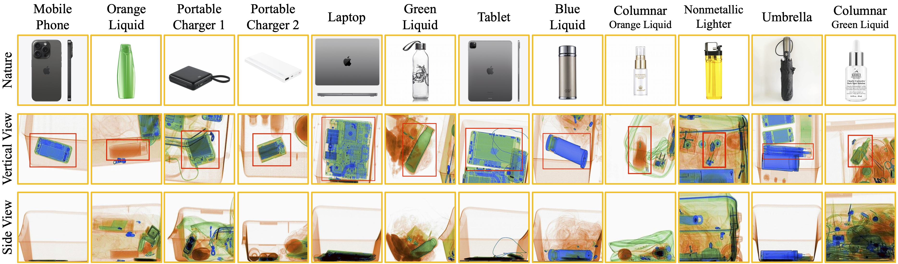

LDXray: A Large-scale Dual-view X-ray Dataset
LDXray is a large-scale dual-view dataset collected from real security scenes in transportation hubs. LDXray contains a wide range of prohibited items, categorized into 12 different classes. These items are illustrated in the following figure.
Experimental Results
We have extensively evaluated existing representative detection models and established baselines. Additionally, we have implemented several different strategies for utilizing side view, including data augmentation-based, contrastive learning-based, and feature fusion-based methods.
-
Baselines

-
Data Augmentation

-
Contrastive Learning

-
Feature Fusion

Dataset and Code Download
The dataset and code can be accessed from the following links:
- LDXray Dataset: Kaggle dataset; BaiduNetDisk
- LDXray Benchmark: LDXray-mmdetection